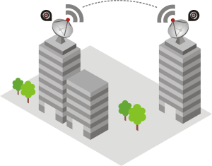

 Se denomina radio enlace a cualquier interconexión entre los terminales de telecomunicaciones efectuados por ondas electromagnéticas. Además si los terminales son fijos, el servicio se lo denomina como tal y si algún terminal es móvil, se lo denomina dentro de los servicios de esas características. Se puede definir al radio enlace del servicio fijo, como sistemas de comunicaciones entre puntos fijos situados sobre la superficie terrestre, que proporcionan una capacidad de información, con características de calidad y disponibilidad determinadas. Típicamente estos enlaces se explotan entre los 800 MHz y 42 GHz.